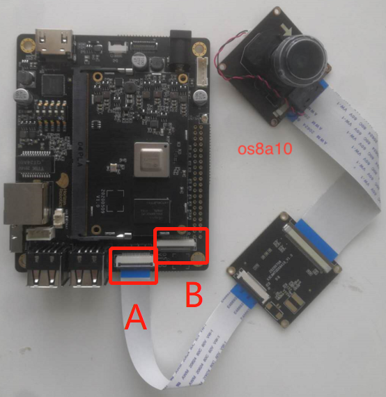

X3 SDB Eco DevKits¶
1. Introduction to Dev Board¶
X3 SDB is also known as X3 Eco Dev Board, it is created based on X3M host controller chip and can offer 5TOPS AI compute. It can support multi-channel camera input and has rich standard hardware interfaces. X3 SDB fits all types of product and appearance specifications. Based on Horizon Robotics’ OpenExplorer software stack, users can implement rapid development, solution verification at development stage and applying to university researchs etc. application scenarios.
Note
X3 SDB is by far Horizon Robotics’ only officially sold dev board. You can purchase it by contacting Horizon’s sales personnel or from Horizon Robotics’ official community.
Click here to make a purchase: https://developer.horizon.ai/forum/id=5f62c6d3cc8b1e59c8582e25.
X3 SDB is composed by motherboard and core board (X3 SOM). The 2 are connected via the DIMM slot and there is fool-proof design. The installation method is similar to notebook memory installation: insert the core board into the DIMM slot at 45 degree angle, then press to lock, as shown below:

Below lists some key characteristics of the dev board:
FUNCTIONAL MODULE |
SPECIFICATIONS |
|---|---|
Host Controller |
Horizon SOC X3（Cortex A53 x4， BPU x2） |
DDR |
1GB/2GB LPDDR4 |
Flash |
8GB/16GB EMMC |
Camera |
MIPI CSI 4lane+2lane+2lane |
Display |
MIPI CSI 4lane+2lane+2lane |
USB |
Device mode：Micro USB 3.0 x1;Host mode：USB Type A 2.0 x4 |
Ethernet |
10/100/1000 Mbps RJ45 x1 |
Debugging Port |
Debugging Serial Port x1 |
LED |
Core Board Power LED x1; Motherboard Power LED x1 |
Extension Port |
40pin extension |
Power |
12V 2A adapter |
Size |
100mm x 82mm |
Dev Board interfaces please refer to below diagram:
{kind=link}
2. Dev Board Assembling¶
X3 SDB is composed by the following components:
X3 SDB core board (x1) and motherboard (x1).
Camera module board (x1).
LCD, TP module board (x1, if screen display is required).
12V@2A power adapter (x1).
Serial port adapter board (x1), 3PIN Dupont thread (x1).
RJ-45 network cable (x1).
The following 8 steps are required to assemble the dev board: insert core board into motherboard; -> connect the camera; -> connect HDMI/LCD; -> debugging port; -> USB port; -> ethernet port; -> TF card; -> WIFI&Bluetooth.
2.1 Insert Core Board into Motherboard¶
Motherboard and core board are main components of X3 SDB. Connect them by inserting the PCB gold finger at the bottom of core board into the DIMM slot in motherboard at 45 degree angle, then press to lock. The fool-proof design makes the connection similar to inserting a notebook memory chip.
{kind=link}
2.2 Connect the Camera¶
As shown in below images, X3 SDB comes with 2 camera interfaces with 24P flip-type FPC connectors. Wherein, the port A next to USB port applies to one 4-lane or 2-lane camera; while Port B next to the board edge applies to 2-lane camera.
Presently, X3 SDB can support 3 types of cameras, namely 8M OS8A10, 2M F37 and USB camera (via USB port). Camera connectors refer to below images:
{kind=link}
{kind=link}
If you’re intended to use other types of cameras, please contact Horizon Robotics for technical support.
2.3 HDMI/LCD Connectors¶
There are 2 visual interfaces in X3 SDB, HDMI and LCD. Wherein, HDMI data transmission complies with BT1120 protocol and uses Lontium LT8618EX. Currently it can support 1920X1080P. The touch screen LCD has 2 interfaces, one is a 6P connector used for connecting with FPC touch screen cable; while the other is a 31P used for MIPI DSI signal transmission and it presently can support 5 inch 720X1280P touch screen LCD.
See below connection schematic diagram.

{kind=link}
2.4 Debugging Port¶
X3 SDB comes with UART0 for log output and function debugging. Interface level is 3.3V, and a 4PIN 2.0mm separation distance connector is provided as debugging port. 2x 2PIN 2.0mm to 2.54mm Dupont threads connect with CP2012 USB to TTL port and can switch via dial switch. Debugging port connector and serial port please see below images: Default Baud rate is 921600.

2.5 USB Port¶
X3 SDB comes with one Micro USB3.0 port and 4 USB2.0 ports.
Due to the mutual exclusivity between the Micro USB3.3 and 4x USB2.0,
when using the 4x USB2.0, the X2A_USB_VBS should be configured as low while
the JTG_TRSTN should be configured as high in order to turn on the power supply of 4x USB2.0.
When using the Micro USB3.0, the X2A_USB_VBS should be configured as high,
please refer to related system software documentation.
2.6 Ethernet Port¶
X3 SDB comes with 1x Ethernet interface. Ethernet can implement physical layers complying with 1000BASE-T, 100BASE-T and 10BASE-T protocols. Users can access to the internet by connecting RJ45 connetcor with network cable. The default IP address is 192.168.1.10.
2.7 TF Card¶
X3 SDB comes with 1x TF card interface whose interface level equals 3.3V. TF card slot is at the back side of dev board, as shown below:

2.8 WiFi&Bluetooth¶
X3 SDB’s WIFI + Bluetooth feature is designed based on AP6212 module. AP6212 is a comprehensive solution which combines WiFi + Bluetooth + FM, it complies with IEEE 802.11 b/g/n standards and is single-stream 802.11n. 802.11g specified 54Mbps or 802.11b is used for connecting with wireless LAN, it can reach 72.2Mbps transmission rate at 11Mbps. The integrated module consists of SDIO Wifi interface, UART/PCM Bluetooth interfaces and UART/I2S/PCM FM interfaces.

2.9 Power the Dev board¶
Before powering the dev board, please checkout the status of DIP switch.
All default values equaling to 0 denote that the board is activated by EMMC and
UART Baud rate equals 921600.
Complete configurations of DIP switch is shown as below:
PIN |
Value |
Func |
|---|---|---|
3:1 |
000 |
Boot From EMMC |
3:1 |
001 |
Boot From SPI NAND |
3:1 |
010 |
Boot From BIFSPI |
3:1 |
011 |
Boot From UART |
3:1 |
100 |
USB Normal Boot |
3:1 |
101 |
Boot From SPI NOR |
4 |
0 |
EMMC：CLK invert;NAND：2K Page;NOR：32bit ADDR |
4 |
1 |
EMMC：CLK invert;NAND：4K Page;NOR：24bit ADDR |
5 |
0 |
UART Baud：921600 |
5 |
1 |
UART Baud：115200 |
After it is comfirmed that all installation steps are correctly executed, insert the adapter into the base. Red LED bulbs of motherboard and core board flashing at the same time means that devices are correctly powered. Meanwhile the debugging port should dump message of device operation.
Warning
Due to the compact design of core board and the DIMM connection between motherboard and core board, the PCBs cannot properly let heat out taking advantage of board area. Therefore, users are recommended to install the attached radiator comes with X3 SDB.